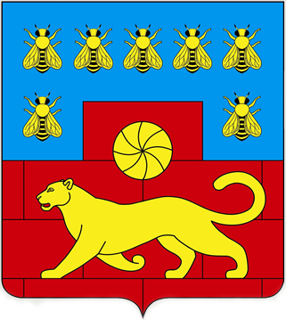
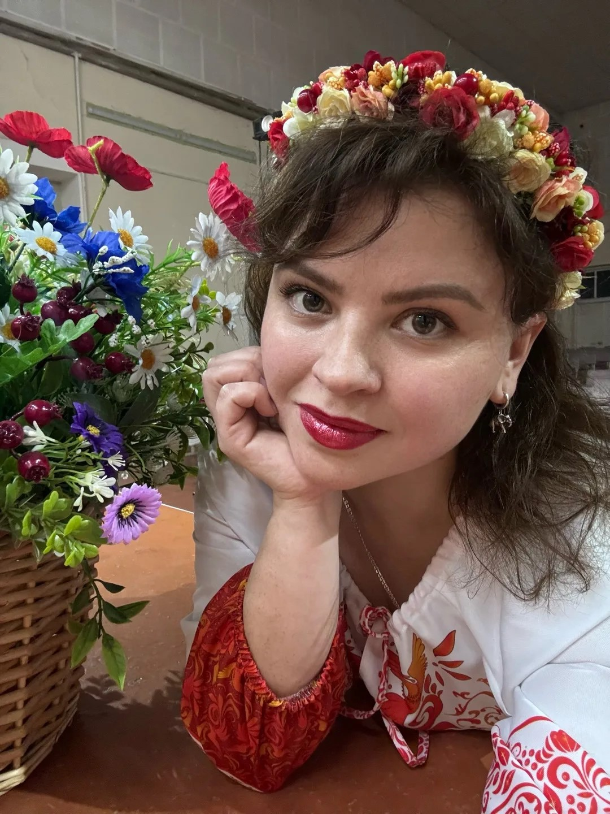

Избирательный участок 1253 Дом Культуры
Дети. Культура. Творчество.
Хмелевская
Мария
Выборы депутатов Собрания депутатов
Краснокрымского сельского поселения
Самовыдвижение
Онлайн голосование
https://voter.gosuslugi.ru/electionИзбирательный участок 1253 Дом Культуры
О себе
Меня зовут Хмелевская Мария.
Я родилась 20 сентября 1988 года в городе Аксае. В 2008 году переехала в СНТ «Факел СКВО». Воспитываю двух дочерей, Ксению и Варвару.
Работаю в индустрии красоты. Увлекаюсь дизайном интерьера, флористикой и музыкой. С 2025 года активно принимаю участие в мероприятиях Ленинаванского дома культуры и общественной деятельности хутора Ленинаван.
В течение года, являясь участником творческого коллектива «Соловушка», столкнулась с множеством проблем дома культуры, которые нельзя откладывать.
Поэтому, приняла решение выдвинуть свою кандидатуру в депутаты Краснокрымского сельского поселения.В перспективе планирую:
- Капитальный ремонт Дома культуры
- Установка игровой площадки для детей на территории Дома культуры
- Организация мастер-классов по дизайну и декору для взрослых
- Озеленение территории Дома культуры
- Решение организационных и бытовых вопросов Дома культуры
- Озеленение территории мемориала ВОВ
- Кондиционирование помещений Дома культуры
- Приобретение костюмов для творческих коллективов
- Организация инициативной группы для подготовки помещений к праздничным мероприятиям
- Развитие волонтерского движения в помощь участникам СВО
- Формирование новых творческих коллективов
- Адресная помощь маломобильным гражданам хутора и пенсионерам в сезонной обрезке и высадке растений

Мною уже сделано
- Сбор гуманитарной помощи участникам СВО
- Косметический ремонт малого зала
- Сбор макулатуры
- Санитарная обрезка деревьев и высадка рассады цветов на территории мемориала ВОВ
- Благоустройство подвальных помещений
- Озеленение комнатными растениями
- Изготовление праздничного декора, оформления сцены
- Снабжение помещений дома культуры зеркалами и гердеробными системами
- Организация системы хранения костюмов и декораций
- Организация аквагрима для детей и молодёжи
- Расчистка лесопосадки по ул.Жукова, ул.Кутузова, ул.Суворова
- Высадка растений в парке 80-летия Победы
- Концерт в поддержку участников СВО совместно с волонтерской организации "КатяВаля"
- Участие в организации мероприятий Дома культуры
- Пополнение библиотечного фонда